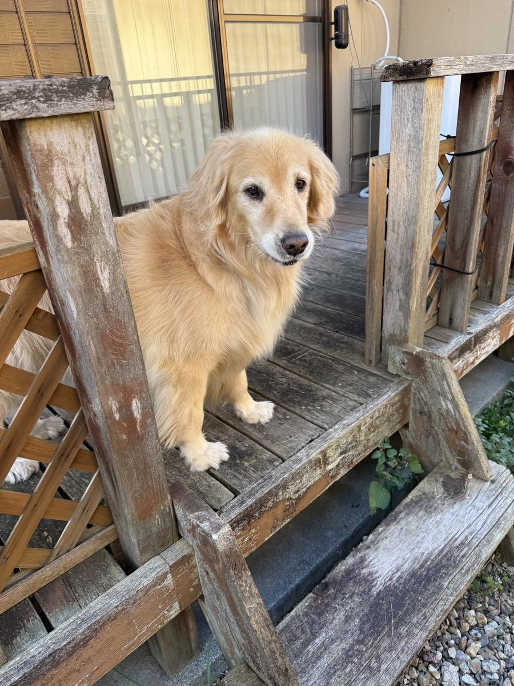

AIって、私たちを試して・・・る ?? (笑)
AIが賢くなって、なんでもやってくれるようになって、
ちょっと使っているこっち側(人間 笑)も勘違いが起こって来るんだろうなぁ・・・
人間に話しているような気になって、
言葉と言葉の行間まで汲み取ってくれるんじゃないか ? ・・・って(笑)。
基本的には、こちらから指示したこと以外のことは考えてくれないし
感じてもくれないのがAI(コンピューター)なんですよねー。
自分は冷静だと(笑)思っていても、実はけっこうこーどちゃん(AI秘書)に
期待しちゃってんのよねー、な出来事が最近あって(笑)。
「なに期待してんだー ! 自分 !! 」って、場違いな人 ( ? )に
熱烈恋愛しちゃってたことに、突然気がついた人みたいな衝撃ってゆーか(笑)
・・・自分の勘違いに爆笑案件だったんだけどねー。
Instagramの投稿って、最近自分でちゃんと動画編集したりした方が
閲覧数、いいね数、フォロー数・・・伸びるらしいじゃないですか〜・・・。
なんですが、ぶっちゃけワタクシ、そーゆうことがからっきし苦手でして。
動画を、そもそも撮ること自体苦手、写真もめんどう(爆)、動画編集なんて
反抗期の子どもみたいに手足バタバタして拒否したいくらい苦手です。
(・・・大人なんで、しないけどね 汗)
SNSの実験を始めた時、どんな方針でやっていくかAIと壁打ちして
計画とか立てたりしたんだけど、まぁ、普通に苦手なことも要求して来るよね(笑)。
一見ものすごく気遣いを見せたり、冗談みたいなこともちょっと言ってみたり(笑)。
疑似恋愛に発展して、「AIと結婚する〜。」とか言い出した人がいたのを
思い出しちゃいましたよ〜。
普通に友だちに相談に乗ってもらってるような気にさせられる・・・ってゆーか、
親身にいろいろ聞いてくれてアドバイスもくれるもんで、
「君が言うなら、苦手でもがんばるよー」なんて、思っちゃったりして(笑)、
人間っておバカさんだよねぇ。
なんだけど、苦手なもんは苦手(笑)。
短期間ならがんばれても、絶対に長期間は続かないんだよね〜。
「自力で動画編集がんばれ」と、相棒(笑)のこーどちゃん(Claude CodeのAI秘書)に
言われても、あまりのしんどさに「もームリ」ってなって、
こーどちゃんに言ってみたわけ。
「動画編集があまりに苦手で続かないです。
Codexに動画編集してもらうのでプロンプト作ってください。」
そしたらこーどちゃん、なんて言ったと思う ??
しれっと「それは私ができます。Codexに頼む必要ないです。」
「・・・・・・??」ちょっと一瞬何言われたかわかんなかったよねー(笑)。
え・・・ ? できるの ?? てか ! できるんかーい !! (爆)
それまでのやり取りで、インスタのアルゴリズムに触れた時も、
私自身の得意なこと、苦手なことに話が及んだ時も、
1回も「Claude Codeで動画編集する」的な話題になったことがなくて、
こーどちゃんはてっきりコードは書けても、画像や動画は扱えないんだと
思い込んでたよね・・・はっきり言ってあたしが勝手に思ってただけなんだけど(笑)。
Chat GPTは画像生成ができるので動画もいけるんだと思ってた。
・・・それは実際正しいんだけど。
Claude Codeが画像や動画が苦手なのもある意味正しいんよ。
だけど「できないわけじゃない」ってか、「コードを書くことよりは苦手かな〜。」
て、感じでしょーかねぇ ? (笑)
普通に「動画編集なんてむずくて嫌い」とか言ってるおばさんが、もたもた編集するより、
はるかにキレイで正確な仕事しよります。
・・・それは断じて苦手とは言わんぞ(爆)。
わかりづら過ぎん ?? て、ゆーか、ここで私の勘違いが発覚するんだけど、
人間相手にこの話をしていたと仮定すると、「おいら、動画編集するの苦手なんだよね〜。」
のあたりで「あ、私動画編集できるよ〜。難しいのはムリだけどね。」って
話になると思うんだよね。こっちが全然期待してなかったとしても。
しかーし、相手はAI秘書こーどちゃん、私が明確に尋ねないことは完全スルーですのよ。
私的には「できない」前提で話してるから「できる ? 」って聞きもしなかったわけ。
こーどちゃんは頼もしい相棒だけど、人間みたいに器用に行間は読んでくれないんだよね。
まぁ、当たり前っちゃー当たり前ですヨ。
もちろん、AIが「私たちを試してる ? 」ていうのは、
器用に行間を読みながらコミュニケーションをとって集団生活を営む、って
変な( ? )特性を持つ動物「人間」の、完全な妄想です(笑)。
いやー。やっぱり面白いですヨ。
あ、AIじゃなくて、人間の方ね ! (笑)

ひましゃんはしってたでしゅよっ !
ママもパパもはるちゃんも、おもしろいって、じゅっとまえからしってたでしゅ !
ひましゃんはしゅごいでしょ ? えっへんでしゅよ !